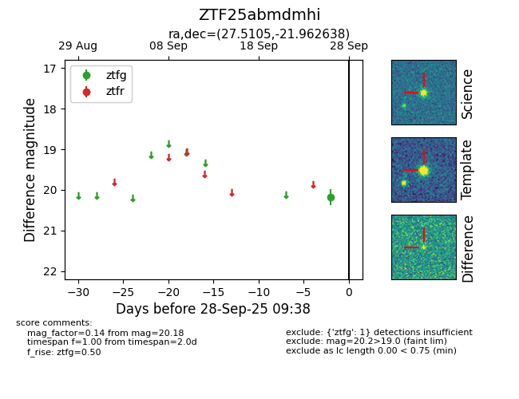

FINK: ZTF25abmdmhi
Lasair: ZTF25abmdmhi
ALeRCE: ZTF25abmdmhi
ZTF25abmdmhi (ztf,fink)
equatorial (ra, dec) = (27.5105,-21.96264)
galactic (l, b) = (194.9174,-75.71957)

last ztfg=20.18
1 ztfg detections